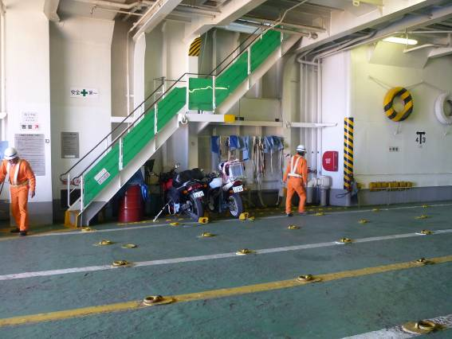
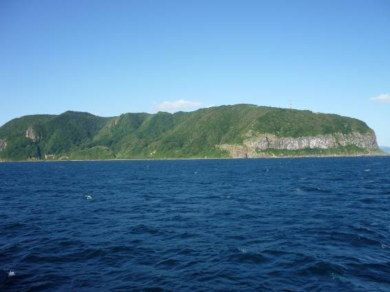
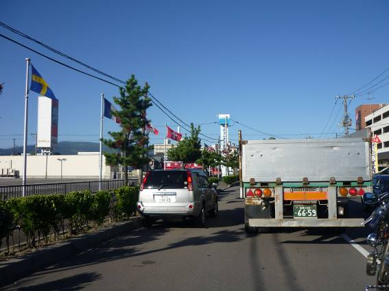
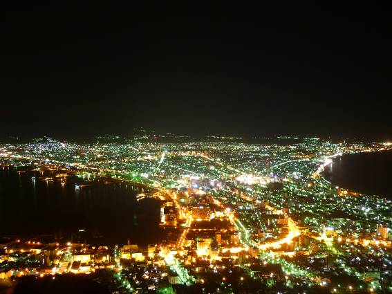
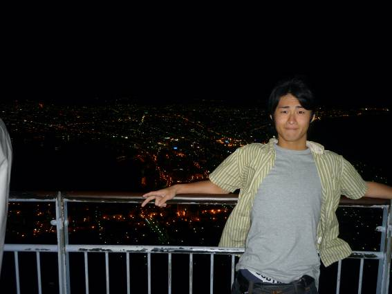
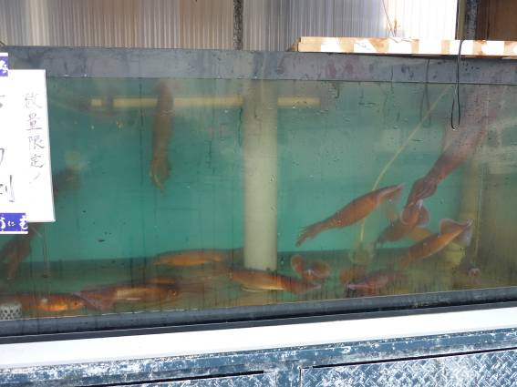
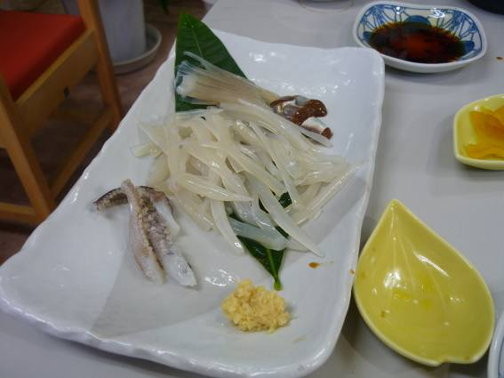

大間(青森)～函館

大間の食堂で食べたホッケ定食。本当は一本釣りで有名な大間のマグロ丼を食べる予定であった。実際、どの食堂の前にも大間のマグロと書かれた旗が立っていた。しかし、値段はどのお店も2500円前後。これは高い・・・。今後のことも考えて断念した。ホッケ定食は800円程度。ボリュームは満点で、味も格別。

フェリーの中にバイクを入庫。北海道上陸を前に、胸が高鳴る。

フェリーは函館港に向けて出港。距離はだいたい40km程である。この下というわけではないが、青函トンネルも津軽海峡の下を通っている。この海峡に海底トンネルを掘るなど信じがたい！！


函館の夜景で有名な函館山。初めは島かと思っていたが、この山の裏にはもう函館の市街が広がっていた。

北海道上陸！！道幅がとても広い。冬場の雪のためだそうだが、夏はみんな2車線として走っているようだ。少し困惑。真ん中を走っていたのでは少し迷惑だろう。このあと、青森で連絡を入れておいた友人コージの元へ。

夜はコージの車で函館観光に連れて行ってもらった。写真は居酒屋で頼んだホタテ。バターだけで焼くシンプルなものだが、うまい！

函館山からの夜景。露出を15秒にしたら、ここまでの写真が撮れた。あまりの美しさに時間も忘れて見とれてしまった。

コージと夜景。これほどの美しい夜景を前にし、僕とコージの間には不思議な緊張感が漂っていた気がする。お互いはにかんでいた。

夜景の他に、面白い景色に遭遇した。斜めになってしまったが、これは函館山から本州方面を見たものである。一番奥にイカ釣り漁船の灯りと内地の夜景がある。そして空には光の筋が。オーロラか！？とも思ったがまさかこんなところで見れるはずもない。どうやらイカ釣り漁船の灯りによるいざり火（？）と呼ばれるものらしい。薄い雲によってチンダル現象が起きたのか、とても神秘的な光景であった。カメラでは写らないと思ったが、露出をMAXである60秒にしてみたら肉眼同様に写すことができた。




翌朝は朝市へ。函館名物、活きイカを注文。市場にはいたるところにこの活きイカを売っている店があった。このように水槽にイカがたくさん泳いでおり、注文すると店員さんが捕まえてイカソーメンにしてくれるのだ。切り刻まれているのに微妙に動いており、口の中に入れると吸盤が舌にくっついてくる。鮮度は抜群。ただしお値段は1500円と高め。一緒に注文した海鮮丼も文句なし！北海道の魅力は、豊かな海の幸がもたらすグルメであると実感した。海鮮丼にはカニの味噌汁がついてきたのだが、これがカニの出汁が効いておりうっとりするような上品な後味。そしておかわり無料！！

函館の名物だと連れて行ってもらったハンバーガー屋。やたらと派手な内装で、真夏なのにクリスマスをアピールしていた。市民は「ラッピ」というそうだ。

五稜郭にて二人で記念撮影。二人とも少し照れている。残念ながら、近くのタワーにのぼらなければ星型には見えないようだ。